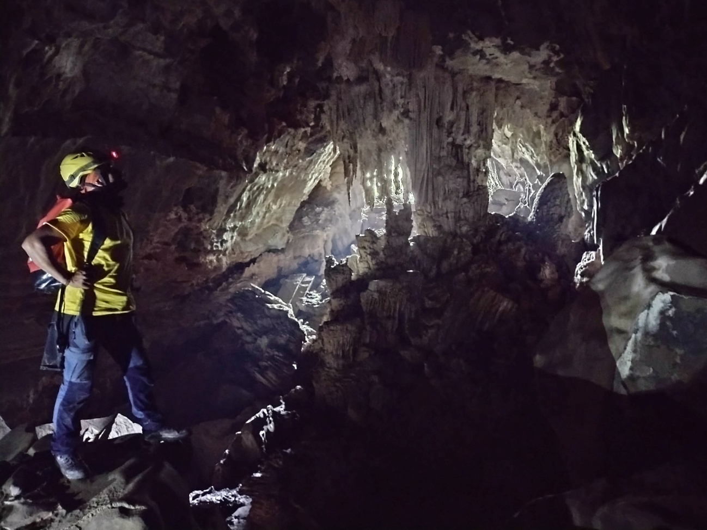
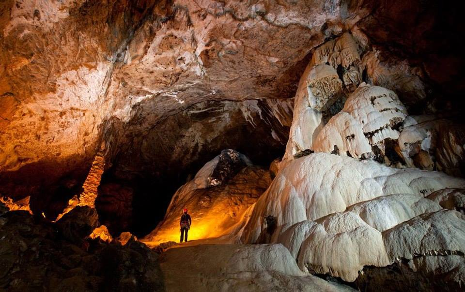
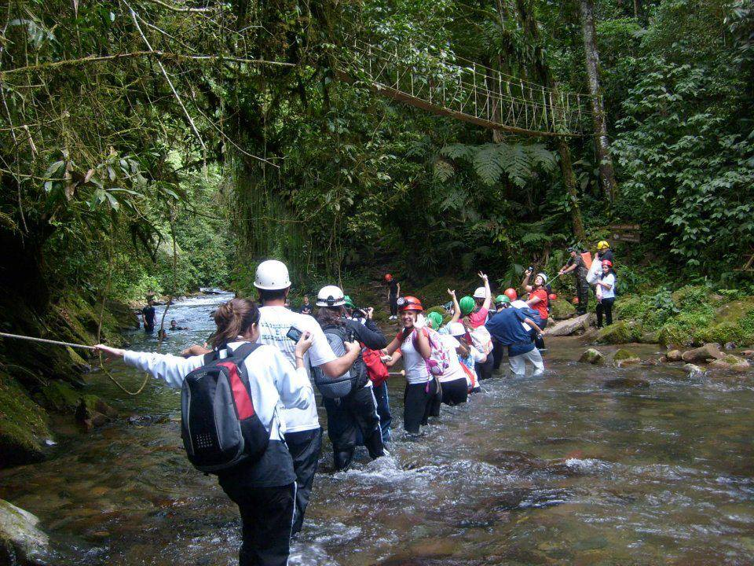
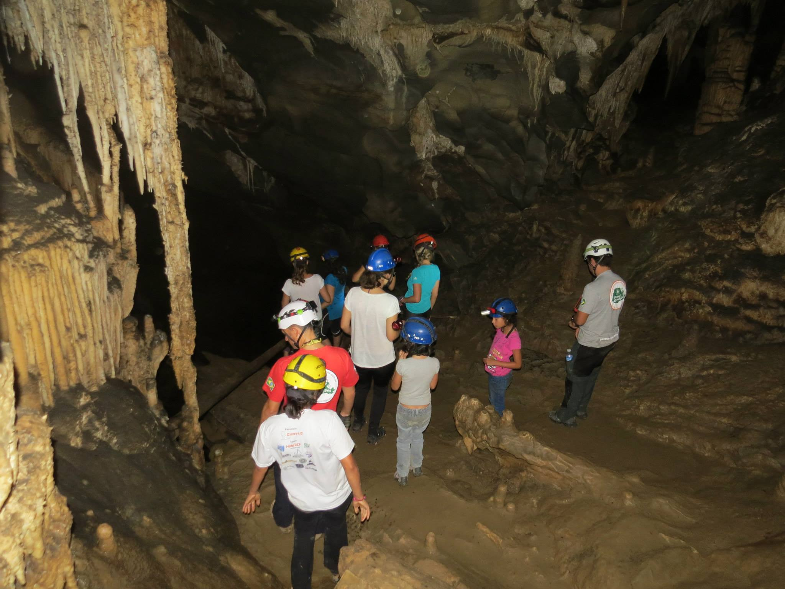
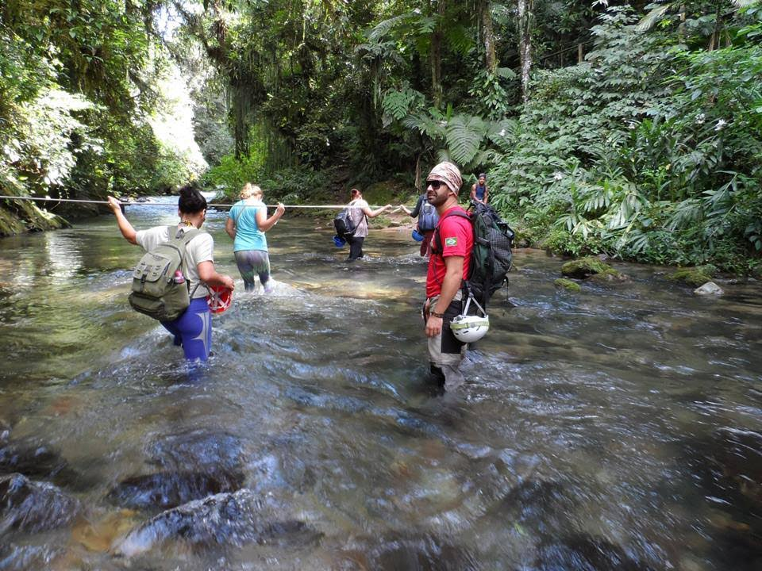

Detalhes do Roteiro
Se você está em busca de uma experiência autêntica de ecoturismo, o PETAR é o destino ideal. Com sua rica biodiversidade, cavernas fascinantes e atividades para todos os gostos, o parque oferece uma imersão completa na natureza.
O Parque Estadual Turístico do Alto Ribeira (PETAR), localizado no sul do estado de São Paulo, é um dos destinos mais emblemáticos para o ecoturismo no Brasil. Com uma vasta área de preservação da Mata Atlântica, o PETAR oferece uma combinação única de cavernas, cachoeiras e trilhas, lhe proporcionando experiências inesquecíveis.
O Petar é caracterizado pela grande quantidade de cavernas que abriga, são mais de 350. Algumas com salões gigantes, dunas, cachoeiras, abismos de até 240 metros de profundidade, ‘quebra-corpos’ e escaladas. Cavernas ‘molhadas’ e ‘secas’. Opções não faltam para todos os gostos e preparos físicos.
Atenção: Somente 12 cavernas do PETAR estão abertas a visitação – Cavernas de Santana, Água Suja, Morro Preto, Couto, Cafezal, Alambari de Baixo e Ouro Grosso.
Serviços incluído no pacote:
Translado privativo in/out saindo de Morretes e Curitiba;
Visita ao Núcleo do Petar;
Taxa de visitação aos núcleos;
Tarifas
| N° de pessoas | Guia bilíngue | Adulto | Criança |
|---|---|---|---|
| 2 a 10 | Não | R$ 1.900.00 | R$ 1.750.00 |
| 2 a 10 | Sim | R$ 2.000.00 | R$ 1.900.00 |
Galeria de Fotos




